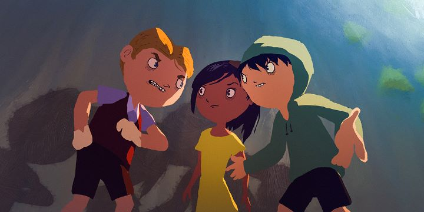

I didn't have high hopes for "Tito and the Birds." For one, the title sounds like a rejected jazz band. Second, the Spanish film from Brazil reminded me in its marketing and story of "Birdboy - The Forgotten Children," another abstract post-apololyptic adventure. Hopefully, the shared themes of darkness in modern-urban society is just a temporary trend from Spanish culture. Anyway, the marketing for "Tito and the Birds" really doesn't do it justice, either for the art style or the story. It's surprisingly good. And unlike "Birdboy," perfectly appropriate for children of all ages.Set in a modern-day city, the citizens are overwhelmed with fear. There isn't anything unusual to be afraid of. It's just the everyday things: running out of clean food or water, running out of money, raising prices, terrorists, disease, etc. The news channels constantly remind everyone of this, keeping everyone in perpetual anxiety. Not unlike our normal life, really. But "Tito and the Birds" goes one step further, personifying this fear as a literal sickness, which begins spreading like a plague; when caught, victims get buldging eyes, shaking hands, shrink down, and finally, become large mute rocks. The celebrity news anchor spreading this fear is happy to use the opportunity to sell real estate, in a closed-off neighborhood protected by a bubble dome.How will the town be saved? Well, Tito's father is something of a mad scientist, convinced that the birds (today, wild and free street pigeons) have always looked after the human race, and always communicated to us when bad times were near. He worked on a secret machine that would translate bird sounds to something humans could understand, but after an accident with Tito in the room, Tito's mother insisted the father leave. Still believing in his lost father, Tito would try to continue the work years later in school, and when the fear outbreak hits, he believes the birds might hold the answer.... on paper, it seems like an original, but not a great, story. I'm always annoyed when family films put a greedy businessman as the antagonist; it feels like it instantly dates the movie, less desirable than a more classic story set in the distant past or future, even if the theme is always relavent. The characters are fairly typical across the board. And the use of birds as the "magic" that will save the day feels random. Why birds? Why not rats, or dogs? The attempt to add lore isn't all that successful, leading a viewer to constantly ask "seriously, why birds?"  Despite all of that, "Tito and the Birds" still feels like a compelling adventure. The stereotypical "kids vs adults" trope comes across well. The brave girl as Tito's child-love interest is cute. One of Tito's friends is a pudgy, mute kid (the smartest of the bunch), who everyone knows is a little weird and ugly, but Tito still treats him as a best friend regardless. Good directing helps tremendously in making the story as entertaining and satisfying as it is on screen.The biggest unique element to "Tito and the Birds" is its visuals. The posters and trailers simply don't capture how innovative the film looks. The backgrounds are entirely hand-painted, with a rough-brush application, with strong colors depicting lighting effects and other simple background animation. That, with clever layouts and dynamic camera movement, looks simply astonishing, one of the most impressive painterly styles I've seen in a film since "Loving Vincent." Unfortunately, the characters themselves are constantly at war with that style. I don't mind that they were digitally painted and animated (the film would have been torture to animate otherwise), but the character designs look just plain ugly. Those large round heads, beady eyes, and tic-tac-teeth smiles... remember how one of Tito's kid friends is meant to stand out as ugly? ALL of the characters, kids and adults, look ugly, and their limited animation varies in quality, not particularly helping matters. It's a shame, since the film has a few minutes of incredibly beautiful animation, typically when no characters are in the frame."Tito and the Birds" does have strong cinematic style, and the audio track helps with that experience. I watched the film with an English dub, and was impressed with the performance (with just a hint of an accent, and generally good acting delivery, it feels authentic and appropriate for the film). It's easy to pass on "Tito and the Birds" as just another cheap foreign film for children, or to be afraid that the story's content wouldn't be appropriate for children in the first place. And in practice, it does miss a few notes. But it's exceptionally better than I thought it would be, and I would encourage everyone to give it a chance, knowing full well that nothing describes it as well as simply watching the thing yourself. I'm hopeful it's not the last film to come from this creative team.
- "Ani" More reviews can be found at : https://2danicritic.github.io/ Previous review: review_Titan_A.E. Next review: review_To_Love_Ru